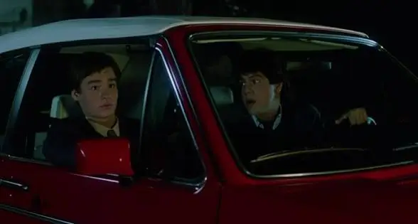
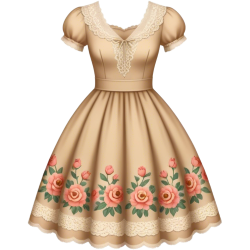

🧛♂️ MY BEST FRIEND IS A VAMPIRE(1987) — CERTIFIED MGC VG-10

⚖️ MGC Lower Court Docket
- Asset Title: My Best Friend is a Vampire (1987) – The Earnest Neo-Nosferatu Teen Planchet
- Official Registry Grade: Certified MGC VG-10 (Very Good / Well-Circulated Genre Alloy)
- Lower Court Jurisdiction: Judge Mina, Chief Grader MGC
- Case File: #055
📜 THE FORENSIC NARRATIVE BREAKDOWN & Luster Log
The Presiding Judge drops the faded 1987 teen comedy planchet onto the dark-mode terminal and dials the strict 5x numismatic magnifying lens directly onto this charmingly dated horror-satire.
The specimen exhibits heavy circulation scuffs from the era’s saturated teen-movie market, yet it possesses a distinct, nostalgic luster. While the surrounding narrative structural alloy suffers from typical late-80s camp degradation, Robert Sean Leonard plays Jeremy Capello with a level of sincere, relatable panic that completely outclasses the goofy script. His immense performance equity adds a critical layer of structural support, single-handedly lifting the asset out of the lower cinematic scrap yards and justifying a manual upgrade to a collectible VG-10 grade.
🚨 The Three Specific Genre & Tactical Planchet Flaws:
1. The Over-Baked Delivery Boy Protocol
- The first act relies too heavily on slow-moving grocery delivery tropes that drag down the initial entertainment velocity before the blood-sucking mechanics trigger.
2. The Garlic and Mirror Cliché Deluge
- Under our strict lens, the script experiences noticeable friction as it checks off every single traditional vampire cliché in rapid succession without forging any new narrative metallurgy.
3. Uncalibrated Final Hunt Execution
- The closing confrontation lacks tactical sharpness, substituting genuine tension with standard, chaotic late-80s goofy horror shortcuts that disrupt the coin’s overall reverse strike depth.
⚖️ FINAL DECREE & CERTIFIED JUDGMENT
Thanks to Robert Sean Leonard’s exceptional performance integrity, the heavy cliché scuffs and uncalibrated third-act execution are mitigated just enough to keep the asset stable. The coin avoids slipping into the Poor (PO-1) scrap heaps and settles firmly on the ledger as a highly circulated but deeply endearing late-80s relic.
- Permanently sealed in the archives as a Certified MGC VG-10 Choice Well-Circulated Specimen. 🧛♂️🍕🪞🩸
- 🔨💥

Case Closed

• © 2026 MOVIE GRADING CONSENSUS. All Sovereign Rights Reserved.